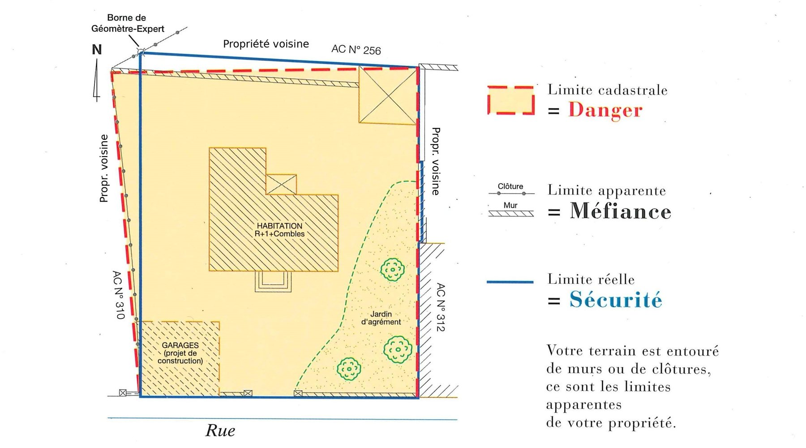
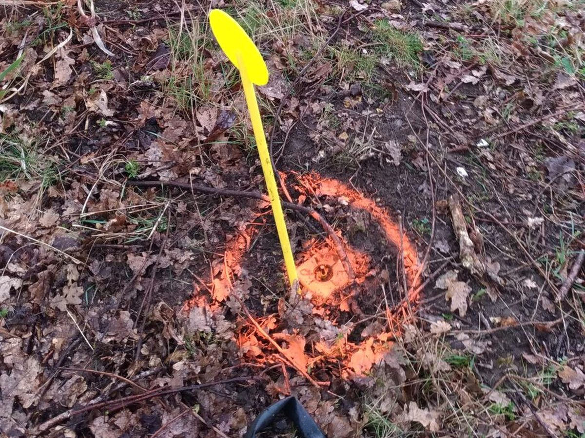
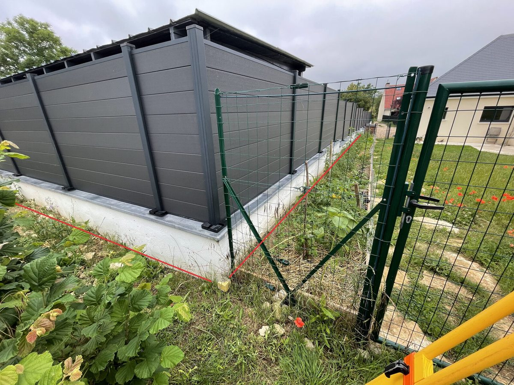
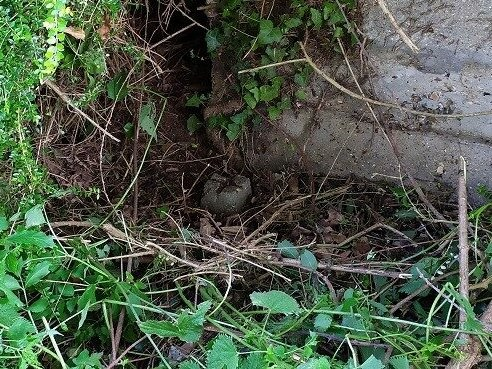

Une limite qui ne se discute plus
Le bornage est l'opération qui fixe définitivement la limite séparative entre deux propriétés privées contiguës, et qui la matérialise sur le terrain par des bornes.
Ce n'est ni un simple relevé, ni un avis. C'est un acte : une fois le procès-verbal signé par les propriétaires concernés, la limite devient contractuelle. Elle s'impose à eux, à leurs héritiers et à leurs acquéreurs. Le litige de voisinage sur « où passe exactement la limite » est clos.
« Tout propriétaire peut obliger son voisin au bornage de leurs propriétés contiguës. Le bornage se fait à frais communs. »
Code civil, article 646Le cadastre n'est pas une limite de propriété
C'est la confusion la plus fréquente. Le plan cadastral est un document fiscal : il sert à répartir l'impôt foncier, pas à délimiter les propriétés. Sa précision graphique est de l'ordre du mètre, parfois davantage sur les plans anciens. Seul le bornage, réalisé par un géomètre-expert, établit la limite juridique.
Trois limites sur le même terrain

Comment se déroule un bornage
Chaque dossier suit la même méthode. Le calendrier dépend surtout de la disponibilité des voisins et du délai de délivrance des archives.
- Étude des titres et des archivesActes de propriété, plans antérieurs, procès-verbaux existants, archives du cabinet et des Archives départementales, documents cadastraux.
- Reconnaissance sur le terrainRecherche des bornes et repères anciens, examen des clôtures, des murs, des haies et des marques de possession.
- Levé et calculsMesures à la station totale et au GNSS, rattachement au système légal, confrontation aux titres et aux plans d'archives.
- Dessin et plan minute de bornageLe travail est reporté et dessiné au bureau. C'est là que s'opère la hiérarchisation des preuves : titres, plans annexés, procès-verbaux antérieurs, signes de délimitation et possession sont confrontés et pesés, chacun selon sa valeur. C'est cette minute qui portera la proposition de limite. On ne convoque pas les riverains les mains vides : on arrive à la réunion avec un document.
- Convocation des propriétairesTous les riverains concernés sont convoqués par écrit. Le bornage est contradictoire : il se fait en présence de chacun, ou de son représentant muni d'une procuration.
- Proposition de limiteChaque propriétaire expose ses arguments et produit ses documents. La limite est proposée, expliquée, discutée, et ajustée si un élément nouveau le justifie.
- Pose des bornesMatérialisation durable de chaque sommet : borne, piquet, clou ou repère scellé selon la nature du sol et l'environnement.
- Procès-verbal de bornageSigné par tous, de façon manuscrite ou numérique. C'est lui qui donne à la limite sa valeur définitive. Le cabinet en conserve l'original et adresse à chaque propriétaire une copie certifiée conforme. Le procès-verbal est versé sur Géofoncier.
Sur le terrain



Vous venez de recevoir une convocation ?
Vous n'êtes pas mis en cause, et vous n'avez rien à régler au cabinet. Un géomètre-expert a été missionné par l'un de vos voisins pour garantir la limite qui sépare vos deux propriétés. Votre participation est indispensable : le bornage est contradictoire.
Le bornage est une opération contradictoire : elle ne peut pas se faire sans vous. C'est votre garantie, pas une formalité. Vous y exposez vos arguments, vous produisez vos documents, et rien n'est arrêté sans votre signature.
Si vous n'êtes pas disponible à la date fixée, vous pouvez vous faire représenter par la personne de votre choix, munie d'une procuration et des documents que vous lui confiez. Si personne ne peut venir, appelez-nous : nous verrons ensemble la marche à suivre.
Les honoraires du géomètre-expert sont à la charge du propriétaire qui a demandé le bornage.
Les questions qu'on nous pose
Pourquoi suis-je convoqué à un bornage ?
Parce qu'un géomètre-expert a été missionné pour garantir les limites de la propriété riveraine à la vôtre. L'article 646 du Code civil permet à tout propriétaire d'obliger son voisin au bornage de leurs propriétés contiguës — et le bornage est contradictoire : votre participation est indispensable. Vous n'êtes ni en cause ni en tort : sans vous, la limite ne peut pas être fixée.
Combien coûte un bornage ?
Il n'existe pas de tarif unique : le prix dépend des recherches d'archives à mener, du nombre de riverains à convoquer, de la nature du terrain, du nombre de bornes à poser et de l'existence ou non d'un accord entre voisins. Le devis est écrit, gratuit et sans engagement. Le détail poste par poste est expliqué ici.
Ma parcelle figure déjà sur le plan cadastral. Pourquoi un bornage ?
Le plan cadastral est un document fiscal. Il n'a pas pour objet de définir ni de fixer les limites de propriété, et sa précision graphique se compte en mètres sur les plans anciens. Seul le bornage garantit la limite.
Ma propriété est close par un mur ou une haie. Cela ne suffit-il pas ?
Non. Un mur, une haie ou une clôture sont des limites apparentes : ce sont des indices de possession, pas des preuves de limite. Seul un procès-verbal de bornage ou de reconnaissance de limites, signé par les propriétaires, garantit la position de la limite.
Il existe déjà des bornes chez moi. Pourquoi me convoquer ?
Pour vérifier qu'elles n'ont pas bougé, et pour retrouver le document d'origine qui explique leur position. Une borne posée n'a de valeur que rattachée au dossier qui l'a mise là.
Une borne a disparu. Faut-il tout recommencer ?
Non. Si un procès-verbal de bornage existe, la limite est déjà fixée : il s'agit d'un simple rétablissement de borne à partir des éléments du dossier. C'est beaucoup plus rapide et moins coûteux qu'un bornage complet.
Que dois-je préparer pour la réunion de bornage ?
Deux choses. D'abord votre titre de propriété, qui établit votre qualité de propriétaire et porte parfois des indications sur la limite. Ensuite tout document en votre possession concernant vos limites : actes anciens, plans, procès-verbaux, courriers. Apportez même ce qui vous semble sans intérêt.
Je ne suis pas disponible à la date fixée.
Vous pouvez vous faire représenter par la personne de votre choix, au moyen d'une procuration. Votre mandataire la présentera au géomètre-expert, avec les documents que vous lui aurez confiés. Si personne ne peut vous représenter, appelez-nous : nous verrons ensemble la marche à suivre.
À quoi sert la réunion de bornage ?
À vous permettre d'exposer vos arguments. Le géomètre-expert recueille les déclarations et les documents de chaque propriétaire, présente le résultat de ses recherches, puis propose la position de la limite. L'accord des parties se concrétise par la pose des bornes, puis par la signature du procès-verbal et du plan de bornage.
Vais-je recevoir le procès-verbal de bornage ?
Oui. Le cabinet conserve l'original et vous adresse une copie certifiée conforme. Le procès-verbal est également versé dans la base cartographique nationale Géofoncier, pour qu'il reste retrouvable bien après nous.
Qui paie le bornage ?
Le Code civil prévoit que le bornage se fait à frais communs ; en pratique, dans un bornage amiable, les honoraires sont pris en charge par le ou les propriétaires qui l'ont demandé. Si vous êtes un riverain convoqué, vous n'avez rien à régler au cabinet.
Mon voisin refuse le bornage, que puis-je faire ?
L'article 646 du Code civil vous donne le droit d'y contraindre votre voisin. Si le dialogue échoue, une étape est obligatoire avant le tribunal : il faut avoir tenté un règlement amiable — conciliateur de justice, médiation ou procédure participative — faute de quoi le juge peut déclarer la demande irrecevable, et il peut le faire de lui-même (article 750-1 du Code de procédure civile). Le conciliateur de justice est gratuit et siège en mairie. Ensuite seulement, la voie judiciaire permet de faire désigner un géomètre-expert et de faire fixer la limite par le tribunal.
Le bornage est-il obligatoire avant de vendre un terrain ?
Il l'est pour la vente d'un lot de lotissement, ou d'un terrain issu d'une zone d'aménagement concerté ou d'un remembrement : le descriptif du terrain vendu doit alors résulter d'un bornage (article L.115-4 du Code de l'urbanisme). Pour les autres terrains à bâtir, l'acte doit seulement indiquer si le descriptif résulte ou non d'un bornage — mais un terrain borné se vend mieux, et sans contestation ultérieure.
Combien de temps cela prend-il ?
Cela dépend surtout de la disponibilité des riverains et des délais d'obtention des archives. Nous vous donnons une estimation au moment du devis.